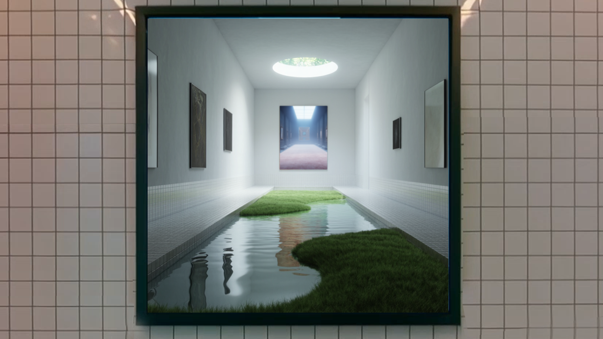

Elsewhere Gallery, 2025


Frames from video. Full video on request — Telegram or email.
The video explores exhibition space as a liminal passage. The gallery appears as a symbolic threshold, where art stops being a static object and becomes a space of immersion: the camera moves continuously through the paintings, joining spaces into a seamless loop with no entrance and no exit. When shown inside an actual gallery, the video creates a double-mirror effect — the viewer looks at an image of a gallery while standing inside one, and unwittingly becomes part of the work.
Read more
The video explores the experience of being in an exhibition space as a liminal state of passage. The gallery appears as a symbolic threshold: the paintings lose their function as static objects and open up as passageways — the camera moves continuously through them, joining the spaces into a seamless loop with neither beginning nor exit.
The work questions the understanding of art as an object for contemplation: it becomes a space one can enter — an experience of immersion in which the distance between "here" and "there" disappears.
When shown inside a gallery, the video creates a double-mirror effect: the viewer looks at an image of a gallery while standing inside an actual exhibition space, and unwittingly becomes part of the work themselves. This doubling makes the question of the boundary — between the work and the space, between reality and its digital image — part of the act of looking itself.